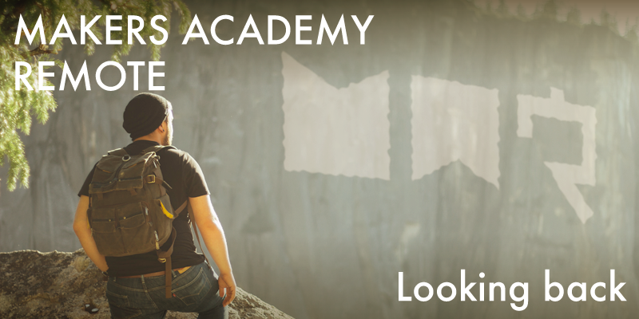

I think enough time has now passed that I can look back on my Makers Academy Remote experience objectively, and summarise what I think will be the key points for anybody who might be considering whether to attend the course.
In no particular order (other than the order that these points came to mind):
It works
Probably the most important point comes first. I took a real leap of faith when I decided to attend Makers Academy. I walked away from a stable job and knowingly faced several months without income. I carried out a huge amount of research before making the decision of which course to take, and without reading about the positive results of previous students I likely wouldn't have taken that life-changing leap for myself. My blogging about the course is partly a way for me to pay that forward, to help others considering the same change of direction.
I left my job to start the course in mid January 2016, the course ran until mid April, and by mid May I'd landed a job as a junior JavaScript developer, that's pretty impressive in my opinion. It took me, with no real coding experience before attending the course, only one month to land a job after it ended. I won't paint a rosier picture than reality, I know of some others on my cohort who have had a more difficult time landing a job, but Makers Academy suggests that almost every graduate job seeker manages to get a suitable job within three months of completing the course, and based on everything I've seen I have no reason to disbelieve that.
Don't worry about the choice of programming language
There are loads of development bootcamps around and they all teach their own particular technology stack. At Makers Academy the focus is primarily on Ruby development. Ruby is a good choice because it's a very beginner-friendly language that has few syntactical rules, and by convention such expressive method names that it almost reads like the English language. Combined with the liberal selection of built-in methods that it comes with, you've got one hell of a contender for the best beginner language ever.
In the working world the use of Ruby is plentiful, but many will tell you that it is on a decline. There are many other languages in use, some of which are considered more modern, more in demand. If you know of a speciality that you already want to work in at the application stage then of course it makes sense to consider a bootcamp that will teach the skills you know you'll need. If not however then fear not, and take my story as an example. While the course focuses mostly on Ruby, with only a little JavaScript thrown in, it took me only a few weeks after the course was complete to pick up enough JavaScript to land a job in it. More incredibly than that only one week after the course ended I taught myself enough C# to attempt a technical test in it for a potential employer. Granted, I wasn't personally coding during that test but navigating, and I failed the test, but the point is it didn't take me long to pick up the basics of a completely new language that wasn't even mentioned during the course, and it won't take you long either.
The truth is that many popular programming languages are very, very similar. The programming concepts you'll pick up when learning Ruby will be applicable to a huge number of languages, and the best practices you'll learn are almost universal.
It's not just web development
The Makers Academy course is advertised as a web development bootcamp. The reasons that I believe web development is the focus of the course are because it's a skill that's in high demand, and also it has a very low barrier to entry. In some other types of development, compiled languages are standard, which require your code to go through a lengthy compilation process each time you want to run something that's changed. By contrast for web development all you have to do is refresh your browser, and occasionally restart a server from the command line to see your changes, which is a nice quick process.
The important point however is that coding is coding whatever the industry, so don't think that once you sign up to Makers Academy you have to be a web developer. Of those on my cohort I know of somebody who intends to work in music production developing audio plugins, and somebody who was recently preparing for an interview with a game development company. You can take the skills you learn at Makers Academy in any direction. Of course a lot of further learning will be required to head in a new direction, but for developers, lifelong learning is a part of the job anyway.
Full stack?
Makers Academy is portrayed as being a full stack web development bootcamp, meaning that it focuses on both the front end and the back end of the stack. While this is true, I'd say that there's a huge bias toward the back end. This makes sense, the back end by its very nature is complex, whereas many front end technologies like HTML and CSS are simple enough to learn alone using just a few tutorials. However I know that some people on my cohort were looking forward to learning those front end skills during the course, and were disappointed to discover that they are largely considered too basic to be taught at Makers Academy, even during the pre-course. Our coach Sam did hold one impromptu HTML and CSS workshop at our request, but there's no room in the curriculum to cover it any further than that. While I understand this decision, I think that HTML and CSS should be covered during the pre-course, because by the time you find out that they're not a part of the curriculum it can be took late to pick them up quickly yourself, because you'll already be buried under a mountain of other work.
Best practices
Makers Academy teaches the absolute best practices on its course. All code is clean, as simple as possible and easy to maintain. Everything is test driven, and you're always working with a pair partner. While all of these practices exist in the working world, keep in mind that the Makers Academy way is a blueprint for how to code in an ideal world. In the working world there are very real constraints on time and money, and often these best practices aren't adhered to.
I know of successful companies that don't test their code at all, or who only write tests after the code is working. I've seen pair coding happening for real, but not all the time. Depending on where you work after the course you might be asked to work alone on a task, or to spike your solution without testing, so don't get too attached to those best practices, and remember that everything has its place. While Makers Academy selects its hiring partners based upon how well they claim to adhere to best practices, there'll always be those occasions when time or money constraints can cause them to change their ways.
In Makers Academy, no one can hear you scream
I personally consider this a strong point of the course, but I also saw it frustrate some members of my cohort considerably. While the course features almost daily lectures from a coach, the coaches aren't there to act as your own personal problem solver. When working, usually with a pair coding partner, you're effectively on your own. If you reach a hurdle there's a very clear ten-step escalation process that requires you to look for an answer using several sources (asking others on your cohort, asking graduated students, posting to various forums, etc) before finally you can ask for the assistance of a coach if you've already exhaused the other nine sources of help. The idea behind this is that in the working world few of us will be lucky enough to have somebody on hand to answer our every question, we'll need to learn to find our own solutions. However I did see several people become frustrated when they were turned away by a coach, so if you're looking for the kind of classroom environment that lets you raise your hand and wait for a teacher to come and help you, Makers Academy might not be the right fit. However if that's the way you want to work, it's likely that being a developer isn't the right fit for you either.
The time commitment is huge
That time commitment. There's a reason it's called a bootcamp, you really do need that military style discipline if you're going to succeed. I have to point out that I'm approaching this as someone who is married with a young son, I know of many on my cohort who are younger, who have no commitments and who can freely devote their every waking moment to the course. If you do have commitments though it can be a very tough process. I've written about it before but it's worth repeating, even though I live with my wife and son, I hardly saw them for the entire three month duration of the course. I justified that to myself with the fact that I was doing this for them, to provide a better future for my family, but honestly when my son was getting upset because he really wanted me to play with him and all I could do was walk away and leave my wife to cheer him up, again, it was heartbreaking.
That last paragraph was a bit more emotionally charged than I'd intended, but if you have commitments then I really do want you to consider the sacrifices you'll have to make if you want to succeed with the course. In my opinion it was definitely worth it, I'm now making up for lost time with my family and we're arguably on a much better path than before, but it's a personal decision and I want to provide you with all the details to help you make it.
Healthy living
Despite the previous paragraph about working so hard that I never saw my family, it's no longer popular to work yourself half to death in order to reach your career goals. It's 2016 and we know that we need to get eight hour's sleep per night. We know that we need to eat our five fruit and veg a day, and that we really should try meditation because all the successful people we know seem to do it, even though it looks boring.
Makers Academy subscribes heavily to this healthy lifestyle, to the point that they've even employed a full-time Chief Joy Officer, charged with, you've guessed it, spreading joy. Yoga is also heavily promoted. Approaching Makers Academy I was looking forward to enjoying this healthier lifestyle, but for me it just didn't happen. In fact for me it was quite the opposite, I found myself so busy with the coursework that my diet became terrible, I'd often snack rather than eat proper meals, and I definitely couldn't find the time to exercise. There's a saying among meditation advocates, that (I'm paraphrasing here) those people who claim they don't have the free time to meditate are the ones who need it the most. To those people I say go to Makers Academy and then come back and tell me the same thing! While that saying might be cute, it felt pretty much impossible during the course to find any free time at all, and with so much work to do and so much to learn at any given time, the opportunity to sit on the floor and channel my innermost thoughts just didn't present itself.
Now that the course is over I'm actually finding that I'm living the healthiest I ever have. I have a newfound vigour, I'm exercising daily, reading daily, studying daily and working hard to cut out any bad habits. My advice would be that while on the course don't concern yourself too much with the healthy living spiel touted by Makers Academy. If you can live healthy then do so, of course, but if your five a day refers to your Pot Noodle count rather than fruit and veg then don't worry, just get through the course however you can, and worry about healthy living afterwards.
Remote or on-site?
When the remote course began it was kind of an experiment, and it was decided that it wouldn't immediately be branded with the Makers Academy name in case it was an abject failure. However enough remote students have now graduated from the course that the statistics can be analysed, and it turns out there's no discernible difference between the on-site students and the remote students in terms of abilities. Graduates from either camp leave with the same level of expertise, and manage to find similarly paying jobs within a similar amount of time. Thanks to this success the remote course has recently been rebranded as Makers Academy Remote.
With such a large gulf in tuition costs between the on-site and remote offerings, the big question is whether paying extra for the on-site experience is really worth it. The curriculum for both routes is identical, and speaking from experience I don't think much was lost in terms of team spirit by attending remotely. As far as I know the only difference between the two routes is that the on-site students are able to regularly attend talks from industry figures, which are held on-site during lunch breaks. At the time that I completed the course Makers Academy were considering whether to set up online streaming of those talks to the remote students, however various speakers were reluctant to have their talks shared online, so I don't know if that will ever actually happen. If those industry talks don't interest you too much (I never saw one, but I don't feel like I missed out too much) then you can save a lot in tuition fees, and possibly transport fees too.
Strongly consider whether to blog during the course
Makers Academy advise every student to blog throughout the course. This is posed as a great way to begin growing your personal brand, and of course it's also a nice way for Makers Academy to pick up some free advertisement. I personally had a very good blogging experience, I blogged regularly throughout the course, and was lucky enough to be awarded Makers Academy's best blog prize at the end of the course, which landed me a nice cash prize. However the time commitment required to blog at the level I did isn't inconsequential. It took some discipline on my part to force myself to write a blog post when I knew that I still had a huge amount of coursework waiting for me. Producing a well written blog post can easily take upwards of a couple of hours, and over the duration of the course that added up to a lot of time spent away from coding.
For me blogging was a success, and I intend to carry on this blog indefinitely. However I know many other graduates who enthusiastically wrote a handful of blog posts early in the course and then simply gave up, leaving their posts languishing in a digital ghost town. There's always time to start a blog after the course ends, so consider carefully if it's the right decision for you to blog during the course. Blogging about the course can be hugely beneficial to future applicants, but your own experience has to take priority.
Makers Academy can be kind of flakey sometimes
I don't mean this as a real criticism, but Makers Academy can be kind of flakey sometimes, in a charming way. While never intentional, there were times when Makers Academy really came across as a scrappy startup without the manpower to deliver on their promises, but thankfully only the minor promises. The major promise of teaching you to code is delivered and then some, so there's no need to worry about that. During the course however there were several times when things were promised and never delivered.
Upon first being accepted on to the course I was asked for my mailing address, with the promise that Makers Academy would like to send me a welcome gift. I never received anything from them in the mail. Before attending the course I almost missed out on the pre-course launch event, because I and some others were never emailed the details of it, thanks to I'm assuming some kind of mailing list problem. During the pre-course I was urged to upload a video of myself pair coding, with the specific promise that upon doing so another ‘prize' would be sent to my house on the first day of the course. I never received anything from Makers Academy in the mail and neither did anybody else that I spoke to. Further to this Makers Academy have a set of custom printed laptop stickers, one designated for each major challenge of the course. For the on-site students the stickers were routinely handed out upon completion of each challenge, and as for us remote students we were promised that the stickers would be mailed to us. Again, that never happened to anybody that I know of. I eventually did get hold of my stickers when I attended Makers Academy in person for their careers fair, but only because I hassled Spike to go and get them for me.
None of the above is important, small prizes and stickers are hardly worth mentioning, but the point is that while keeping their eye on the bigger picture Makers Academy often forget the smaller things. It's totally forgivable, I regard it the same way I might regard a friend who always has their head in the clouds, it's kind of charming. If you're not aware of this foible beforehand though it can come across as unprofessional, or even rude. I'm sure this will improve with time. Everything is in a constant state of flux at Makers Academy and often the small things can be overlooked when nobody in particular has been given ownership of them.
Note: I've since learned that some people on my cohort did actually receive a welcome postcard in the mail, although I was never that lucky.
To Vim or not to Vim?
Throughout the course Vim was posed as a mythical text editor, difficult to master but capable of changing your life if you put in the effort to learn it properly. Vim's supporters are very enthusiastic, it's almost a cult.
I began to learn Vim during week 4, but it was such a pain thanks to its crazy key bindings that I just couldn't bear to stick with it, I sat back with the Atom text editor and watched the rest of #vimClub race away without me.
Now that the course has ended I'm not so sure Vim was worth the trouble at all. I've recently worked with others who are very proficient at using Vim, and sure they're fast, Vim has a load of useful shortcuts, but I don't feel like I've missed out by staying with more modern text editors. Now that I'm specialising in JavaScript I've recently switched to WebStorm, and I'm sure that once I've learned it properly I'll be more than fast enough with it.
I have nothing against Vim, I'm sure that Vim experts could probably speed code faster than those using other text editors, I'm just not convinced that the gain is worth the trouble to learn it during an already intense course.
Conclusion
That's it I guess, I've pretty much exhausted everything I have to say about Makers Academy. It was an amazing, life-changing experience, but it's done and now I need to focus on the future. I'll keep this blog alive indefinitely as I make my way through my new career.
When writing this blog I've always kept in mind its audience, and I've worked to keep each post informative, rather than simply keeping a personal diary that would be of limited interest to others. As such I intend to continue in that tradition, and as I become more experienced I hope to start posting tutorials to help others, as well as to strengthen my own understanding. I guess there'll be a natural trajectory from beginner level posts to more complex posts, as my experience grows, and I hope this will be of assistance to future developers looking to jump into the industry.